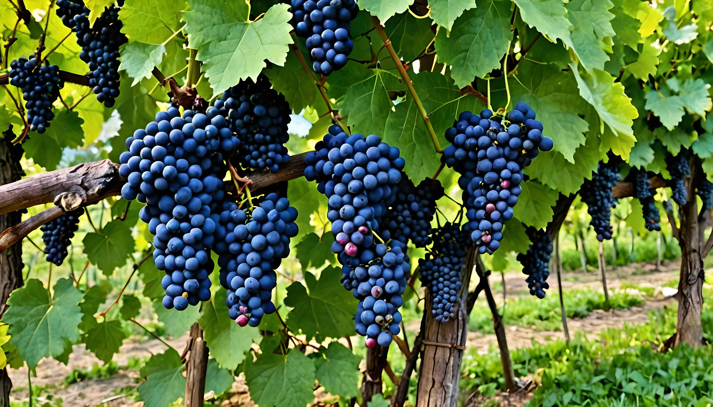
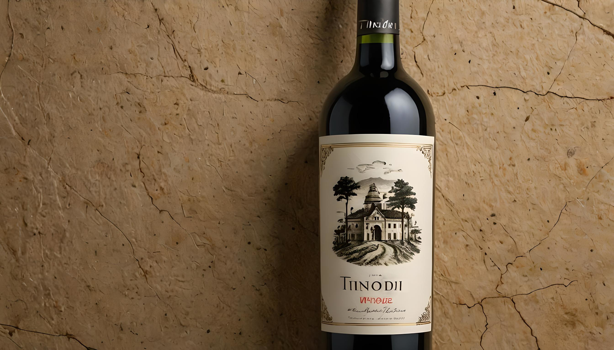

2018 első szőlőfürtjei - 2018

Az év bora ezekből készült - 2019

Első fénykép a borunkról - 1904

Munkások az őseink földjén - 1653

A birtokunk legrégebbi kastélya - 2011

Első borunk 2008-ban - 2008